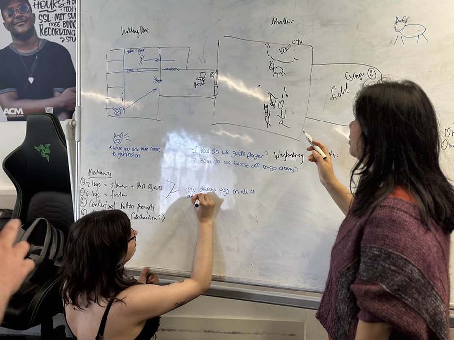
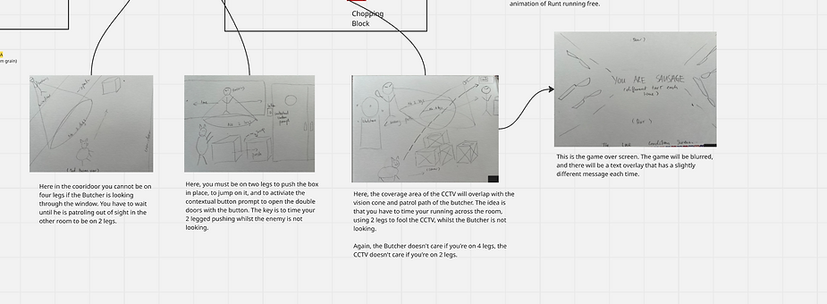
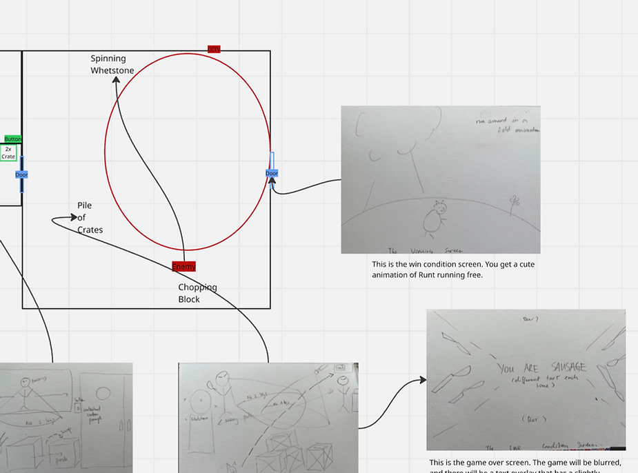

WEEK 1
Aug 18, 2025
Collaborative Design is the Name of the Game(Jam)
Today we talked about the strengths of the team and what we are passionate about when it comes to game development. Will has been inspired recently by horror and animals. In the ideation process we came up with the idea of slaughterhouse horror as combining the two. This was the seed from which the game Little Pig grew.
As lead designer in this project I will be responsible for coming up with the details of the design in this coming week. I need to look at games like Bramble and Little Nightmares to see what manner of puzzle platformer we need to be looking at emulating.
I approached the design of this game very different from my last collaboration -- for smaller projects it's actually mission critical for people to have an extremely clear, simple vision of what they are trying to produce, as you don't have lots of leeway to pivot or edit or change course during development. We only have 10 weeks!
I've learned from my last game designing experience that trying to implement a very specific and unique vision that only one person on the team has in their mind is actually not a wise move on a small game jam sort of production scale. So I went with the collaborative approach and encouraged all team members to come at me with their best ideas and favourite game mechanics.
The phrase Mechanic, Dynamics, Aesthetics came up this week – that the mechanics of the game guide the dynamic feedback loop that informs the player as to the progression of the game, with the aesthetics as the final ‘overlay’ and ‘gloss’ on top of those two. So I think my major task this week is to focus on the mechanics of the game, to narrow it down, to focus on the ideas that have come up and cut out the things that don’t match up with one coherent vision of the game.
I plan on creating a presentation that will effectively be my ‘pitch’ for the design of the game.
These are the roles that we have assigned within the team:
Team: Animal Farm
Megan -- Team lead, level design, programming, environment art and design
Loretta (myself) -- Co-team Lead, Design, narrative design, programming, QA Lead.
Jared -- Programming
Will -- 3D modelling, character design, animator
Chris -- Sound designer, voice over artist, story writer
Dylan -- Sound designer
WEEK 2
Aug 18, 2025
Spent the team collaboration session brainstorming ideas and agreeing on a scope for project. The ideation phase is my absolute favourite part of game development and we had a blast making a spiderchart on Miro to discuss our ideas for the game.
Transparency is a key value in agile development and Miro as a collaborative tool was incredibly useful in helping us achieve that.
In terms of what I consider the 'pain point' where ideation hits actual planning, scoping and agreeing on exact work to be done on the project, we are still stumbling along a bit. There is a lot of enthusiasm but not a lot of hard committment to specific mechanics to be included within the game. Team members loved to talk about story and vibes but as designers and co-team leaders (essentially producers) Megan and I are a bit concerned about this.
I think that the best course of action would be to develop a more concrete vision for both the level design and the actual nitty gritty mechanics at the same time -- in my mind as a game designer mechanics and level design are inseparable sides of the same coin. The academic advisor advised focusing first on the mechanic, then using the level design to elicit the kind of gameplay you want to emerge from said mechanic.
One idea that came up in our collaborative design discussions as a team was the inclusion of a 'stand up' mechanic -- we thought there was charm and some comedy value in playing a little pig character who would manipulate the game environment while standing up on two legs. I'm conceptualising it as the opposite of a crouch in a stealth game. I love when I come across fun ideas for mechanics in game jams such as these and I spent the week writing the Game Design Document and thinking about how best to implement a 'two legs / four legs' pig mechanism into a horror stealth environment
WEEK 3
Aug 18, 2025
Level design scoping was the key focus of our efforts this week as a team, as no solid plan for what manner of environment we were to build/implement was forthcoming. I decided to grasp the nettle and lead the meeting on the topic. I went in with an agenda planned, which helped keep our collaboration on course and on task.
As a matter of dividing up the design work Megan was tasked with coming up with a plan for one 'room' or the first 'environment' of an abattoir and I with the second room. Her task was the trickier, design-wise, in my opinion as the tutorial level is always one of the most thorny design problems -- how to telegraph things to a player without being overbearing.
I supported Megan in her design task by researching abattoirs and showing her the different shapes and layouts that she could potentially draw from real life. This is a clip from our level design Miro board that represents some of my visual reseach.
The aim of the current sprint was to decide enough about the level architecture so that whiteboxing and programming could begin in earnest. My biggest concern is what I sense to be Megan's lack of confidence in having ideas (she is level designer and co-lead of the team). I feel she is looking for communal support and/or unanimous agreement on design decisions, but I think part of a designer's job is just to make decisions and give the team confidence that those design decisions are sound, because you've thought about them carefully.
I made a mental note to myself to try to bolster her confidence as much as possible as I feel this level design process must not drag on over too many weeks. Another mental note I made was to consider whether her leadership style is just different than my own and equally valid. Only time will tell.
WEEK 4
Aug 18, 2025
This week our design collaboration has been aided by being in the same room again. We made use of the whiteboard as a communication tool. This was enormously effective, despite my extremely poor handwriting.
Our initial ideas for mechanics and level design finally coalesced into an actionable plan with a defined scope for the whiteboxing phase. I'm pleased to have finished writing the Game Design Document, exactly as I had pitched it to the team two weeks ago -- it's a story about a pig escaping their horrible meat-carcass doom.
I did not agree with all of the design decisions that Megan made. Equally, I acknowledge that we have divided the design responsibility and I have made that committment to accept her creative freedom. The bottom line is that her part of the level design will dovetail with mine as the mechanics will be the exact same ones used. In that sense I am content that. My design will be my own as well, and the two will not detract from one another.
I gave Megan the feedback about her design process being slower than I would prefer, and that formed part of this week's sprint reflection. Again, I think it might be a confidence issue, and a certain leadership style that emphasises unanimity, but as a team member I understand that I must accomodate these different styles. There is every chance that I'm the one who is missing something, and has something to learn from others. As the Agile values propound -- people over processes!
This week I will spend in Blender making up a whitebox model. The art department (Will, most likely) will take that blueprint and iterate on it, adding props and texture.
WEEK 5
Aug 18, 2025
This week I've taken on the task of storyboarding the game flow so that programming can have a definitve graphical idea of how the game should look and feel at runtime.



I'm still finding that Miro as a collaborative visual tool to communicate is incredibly useful.
Regarding collaboration tools, am finding that nobody is using Trello and its quite frustrating to have to nag people to update their tasks. However I still do prefer having the Trello board there as a reminder for me as producer of what was agreed upon, work-wise, on a week-to-week basis.
Team members are finding that Github is difficult to get used to using. Jared is not confident as using speech to communicate and explain things which has slowed development somewhat. It was unfair of me to expect him to be the Github expert and tutor everyone in how to use it, however. So we will lean on the academic advisors instead, in future weeks. We have workarounds in place -- using google docs, zipping up files that need to be transfered between team members. But I am wary of this 'workaround' solution becoming the 'normal' solution as people seem to find it so much easier to understand than using Git! I don't honestly know what more I can say to convince to them that Git is in the long run a much better solution, especially in terms of version control, and to just learn the new thing. Which is a bit frustrating.
In the meantime we haven't had any serious pipeline related blockers regarding being unable to share files -- but secretly I hope we have a big problem that necessitates the use of Git early on in the Project so it forces all team members to grab the Github bull by the horns! Then they'll HAVE to use and learn Git, eh?! (okay that was meanspirited.)
WEEK 6
Aug 18, 2025
This week saw my skills as Co-Lead of the Animal Farm team tested by a rupture between members. Megan and Will had a disagreement about the progress of the game art.
My sense of the matter is that Will was unhappy about the fact that Megan had been using unofficial, informal channels to direct her criticism at him over the lack of progress on the 3D modelling that needs to be done by the time we pull things together for the first playable. We need a working player character and working animations -- if this is a first draft then so be it, we just need something. Will has been delaying this task over a lack of understanding of 3D modelling skills and techniques and would prefer to wait for his tutor to get to that subject in due course over the semester. He feels underappreciated and unfairly criticised about the quality of his work as an artist.
Megan is unhappy that Will does not show initiative in learning how to 3D model by himself. It is true that the art side of development has fallen very behind schedule. She is incredibly stressed by the slowness of progress of the art tasks and would like to find a solution. I can empathise with that, as Co-Lead.
As a compromise I agreed with the two of them that I would intercede and 'manage' the art from Will from now on, as they seem to have fallen into a maladaptive communication pattern.
As for the art tasks themselves, Megan has kindly taken on the environment art and prop modelling tasks so that Will can focus on charcter modelling and animation. We also agreed to source an outside artist to do the character modelling of the enemy Butcher as at this point we were so far behind that having a backup option is necessary. Should it come to pass that Will be unable to do a complete a iteration of the Butcher model, we would not be left in the lurch.
I am satisfied that I was able to restore a working relationship within the team using communication and compromise. People over processes, responding to change over following of a plan -- these are the Agile values that we have implemented.
WEEK 7
Aug 18, 2025
This week I made an impassioned speech to the team in favour of getting a first playable up and running. The whiteboxes have been made but we have been having issues with Github and the modelled whiteboxes have not been implemented into the programming that Jared has been working on.
I have some major concerns about the progress of the development. Megan has been extremely helpful in taking on extra art tasks and managing communication with the external artist responsible for producing the enemy Butcher character model.
All of the requisite design tasks in aid of making a first playable happen have been complete for some time so I'm not impressed with the backlog.
I continue to manage the communication between Megan and Will. While this has resulted in some art being completed the backlog remains. From what I can tell it's a confidence issue and I will continue to support Will by giving him feedback where appropriate.
WEEK 8
Aug 18, 2025
At the beginning of the week we still had no first playable, but by the middle of the week onward we had identified the problem. It turns out that Jared had no idea at all that he was responsible for implementing the scripts he had written together with the assets created by Will and Megan (and external artist.) It seems that he assumed implementation would be done by the design team.
This was contrary to my understanding of the workload split. I had in the 4th week of development asked if Jared would like to pass on some of the implementation workload onto myself -- on the condition that he make a small video tutorial guiding the whole team through how he had organised the file structure (although to be fair he did write and excellent Technical Design Document.) I had been keen for him to explain how his code works because Megan and I are not as proficient at coding as he.
When Jared refused to make the video explaining his code, saying that "he is very bad at verbally explaining things" I had taken that to mean he would be the one to do all the implementation. A miscommunication on both sides. There was some friction over the matter. But I think we have resolved it satisfactorily. In future I must be much more clear and never assume someone will do something unless we actively agree on that thing.
WEEK 9
Aug 18, 2025
Megan and I had a disagreement about down-scoping the project this week. Although the two of us clashed over that matter, it was resolved during the in-person team meeting where we opened the discussion up to the rest of the team. Collectively we decided to downscope two of the three areas of the game -- Room 1 and Room 3 -- in order to meet the necessary development milestones on time.
I led the 'downscoping' team meeting. It was largely successful and Megan thanked me for my professionalism on the way out which was a kind gesture. It never ceases to surprise me how much being empathetic makes for good leadership.
A first playable is in place, which was good for team morale. We did a first round of internal alpha build playtesting and the resulting feedback was heartening.
Responding to change is an important aspect of the Agile methodology -- downscoping the game to deliver a similar but actually completable game demo of the Little Pig concept was the right thing to do for our team as a whole, it just took me a moment to realise it. The important thing is that lessons were learned.
This week I completed the UI design for the 'game over' screen wipe.
WEEK 10
Aug 18, 2025
This week I wrote the marketing blurb for the itch.io page on which Little Pig is to be published. I also completed the design of the New User Questionnaire using Google Forms which is to be sent out to external playtesters.
The game is fully functional and working as designed which is a fulfilling thing to witness. The audio is still to be completed -- Chris encountered some hardware issues which we as a whole team are waiting to be fixed. As soon as the audio is in, we can start getting playtester feedback, which to me as a designer is incredibly exciting.
We had our postmortem discussion about the development journey as a whole and many important areas for improvement were highlighted. Communication could have been much better -- in my view it was hampered by team member's natural shyness. There seems to have been quite a few missed opportunities for clearer feedback and more direct messaging from all sides.
In terms of pipeline planning on the design side we could have pushed harder for the first playable to be complete much earlier -- perhaps even by Week 4 or 5 if possible. This would have helped us iron out some of the design issues earlier on -- such as setting the physics parameters for the player character after some detailed playtesting. The Github learning curve was steep and we have had issues almost the entire time, which is another big stumbling block we have chalked up to experience.
Hopefully all these mistakes are learning moments in disguise -- a big part of the Agile methodology is to continuously evaluated and improve team processes and this postmorted was useful for that aim.
WEEK 11
Aug 18, 2025
During the final team collaboration meeting we attempted to fix some serious design-breaking bugs that had cropped up in the aftermath of audio implementation. As designer I was very disappointed to see these programming issues crop up at such a late hour. Jared our programmer was not available to assist.
I am grateful nonetheless to the tireless tutors and dedicated team for trying to realise my design vision up until the very last minute. Alas no solution was forthcoming and I made the executive decision to publish with the bugs in place.
According to the questionnaire feedback from the beta testers it hardly mattered -- most were impressed by the ambiance and lighting of the game, and found the setting and story design creative. I spent the whole week ensuring that we hit double digits for number of playtesters so that the team could have enough meaningful feedback to comment on in their respective writeups.
The major criticism was that there was not enough communication of what the puzzle in Room 1 was supposed to be, many playtesters got stuck in that pigpen area in the very first room. If I could have a do-over I would ask Jared to do something different for the programming of the player character capsule. The physics were a bit odd and I think it contributed to a lot of people being 'stuck' and unable to get past puzzle barriers. My part of the level design encountered very few issues among playtesters and for that I was extremely pleased!
Overall a successfull game jam!